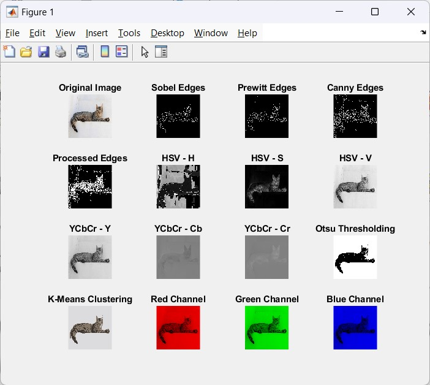

Professional Portfolio
A showcase of my academic and personal IT projects that demonstrate my technical expertise and passion for technology.

F1 Driver Clustering
Python-based machine learning project analyzing Formula 1 driver performance using K-Means clustering.
View Project
Professional Profile Website
Responsive website portfolio built with HTML, CSS, and JavaScript showcasing my education, experience, and skills.
View Project

Image Processing and Classification
MATLAB project implementing preprocessing, segmentation, and classification techniques using SVM and K-Means.
View Project
Prison Management System
Database design and EERD project modeling entities and relationships for efficient prison data management.
View Project